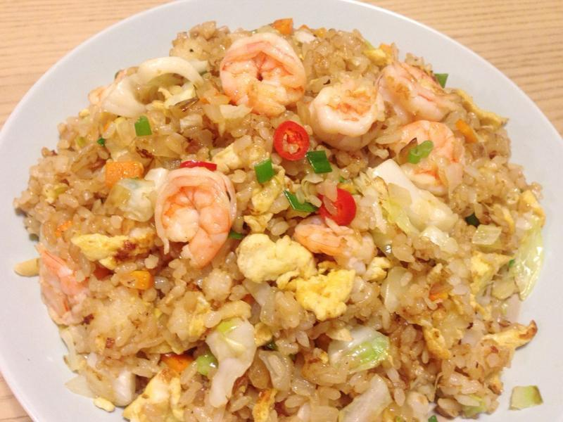

Menu 飯類
怎麼製作好吃的炒飯!
台式蛋炒飯配料簡單卻非常美味，料理新手往往也會從這道料理開始入門，不過要炒出好吃的蛋炒飯，似乎比想像中難上許多！來看看蛋炒飯的重點有哪些吧！

米飯的重點
-
使用冷飯更好吃！
熱米飯中的澱粉已經全部糊化，黏度十分高，讓米粒容易互相黏結，讓炒出的米粒不夠鬆散。建議選擇冷飯來製作炒飯，若有隔夜飯更好！因為冷飯已經流失了部分的水分，飯粒比較乾硬、黏度下降，蛋液較能完整包覆住每顆米粒，吃來更加粒粒分明。
-
少許水份抓鬆米飯
冷飯及隔夜飯水分較低，常常會結成乾硬的團狀，這時候可以把飯放在篩網上，用冷水稍微沖溼，將飯粒抓勻、散開，再瀝乾即可使用。亦可在熱炒時，一邊翻炒一邊緩慢淋入少許的過濾水，幫助米飯散開。記得不可以一次加入，會讓飯粒全部黏在一起。
-
新米飯也有訣竅
若要準備專門用來炒飯的米飯，煮飯的水量要比一般米飯少，大約減少10%～20%。米飯煮好時，先趁熱用飯勺進行「撥鬆」的動作，讓水氣散出，再繼續燜10分鐘左右，如此煮出的米飯的濕度均勻，入口的顆粒感會更加明顯。 若煮飯時水不小心放了太多，讓煮好的白飯過於黏糊，可以用這一招急救：打蛋時將蛋白和蛋黃分開，把蛋黃放入白飯中攪拌均勻，會吸收米飯多餘的水份，炒出的米飯呈現金黃色，也非常美觀呢！
熱炒時的重點 熱鍋、熱油這樣做 熱鍋後倒入適量的油，輕輕搖動鍋子，讓鍋面完整吃油，再把多餘的油倒出，重新加入適量的冷油。待油溫上升至約攝氏80度時即可加入蛋液拌炒，如此可避免因油溫過高，讓蛋液和米飯容易燒焦。
油溫過高亦會使白飯釋放澱粉質，導致飯粒過於軟爛。 火力的重點 中式炒飯往往是以大火快速翻炒，在短時間內起鍋盛盤。因為米飯下鍋時，油溫會快速下降，為確保油溫維持在一定的溫度，會以大火來翻炒，讓米飯快速導熱、炒透。
下料的順序 蛋炒飯要先加雞蛋？先加飯？還是一起放？下料順序千萬不能馬虎，雞蛋跟白飯的順序可是蛋炒飯的美味關鍵之一呢！ 蛋白和蛋黃都有其獨特口感，每個人喜好不同，所以雞蛋打勻或不打勻皆可，雞蛋入鍋後用鍋鏟稍微翻炒至凝固後，再放入米飯一起快炒，便能讓雞蛋保持滑嫩順口，且炒出蛋炒飯也不會有蛋腥味。
除了基本的蛋炒飯，若要加入其他的配料，都要先炒好後再放入米飯，不可以全部同時丟下鍋唷！若想要加入的食材本身帶有過多水份，要先炒乾再加入白飯，才能避免米飯水份過多，吃起來黏黏糊糊，失去炒飯的美味精髓。 翻炒的重點
將米飯炒開時，切記不可以用鍋鏟壓，否則會讓米飯黏成一整團，破壞外觀跟口感。建議用鍋鏟以切的方式來打散飯粒，或是事先將白飯翻鬆。
-
調味料的重點
飯炒均勻後，先轉小火，便可依個人喜好放入青蔥、鹽巴、醬油等調味料，再以大火迅速翻炒約10秒，讓青蔥的香味釋放便可起鍋。 除了起鍋前再放入蔥花的方式，有些人喜歡炒完雞蛋後就放入蔥花爆香，再與白飯一同翻炒，這樣的做法會讓蔥的香氣會更加濃郁。 不要直接將「醬油」淋在米飯上頭，建議可以從鍋邊倒進，鍋子的熱度會讓醬汁產生類似焦糖的味道，香氣撲鼻！